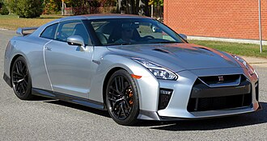

Nissan GT-R ( Gran TurismoRacing ; მოდელის კოდი: R35 ; იაპონური: 日産・GT-R; Nissan GT-R ) არის სპორტული ავტომობილი , რომელიც იაპონური ბრენდის, Nissan-ის მიერ 2007 წლიდან 2025 წლამდე იწარმოებოდა. მას აქვს 2+2 სავარძლის განლაგება და ასევე ითვლება გრანდ ტურერად . ძრავა წინა და შუაშია დამონტაჟებული და ოთხივე ბორბალს ამოძრავებს . ის ცვლის Nissan Skyline GT-R- ს, Nissan Skyline- ის მაღალი ხარისხის ვარიანტს . მიუხედავად იმისა, რომ ეს მოდელი იყო მეექვსე თაობა, რომელმაც GT-R სახელი ატარა, ის აღარ არის Skyline-ის ხაზის ნაწილი. ავტომობილი აშენდა PM პლატფორმაზე , რომელიც წარმოიშვა Skyline-ისა და Nissan Z მოდელებში გამოყენებული FM პლატფორმიდან . წარმოება მიმდინარეობდა Nissan-ის იაპონიაში , ტოჩიგის ქარხანაში , საერთო საწარმოო ხაზზე
